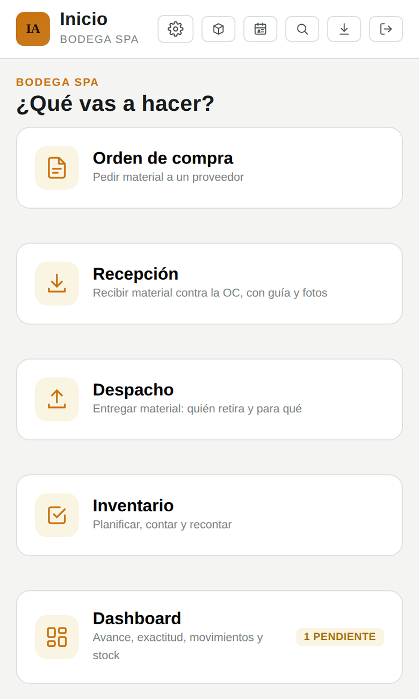

Ordena el movimiento de todos los días: lo que se le pide al proveedor, lo que llega, lo que sale y lo que queda en el estante. Cada movimiento con su documento, su responsable y su respaldo.
Hoy el ingreso se anota en un cuaderno o en un Excel que vive en un solo computador, y la salida muchas veces en ninguna parte. Cuando falta un material, nadie puede afirmar si llegó, si salió o quién lo retiró.

Eliges el proveedor y los materiales, con el precio y la fecha de la última compra a la vista. La orden sale lista para mandar.
Recibes contra la orden: cantidad real, número de guía y fotos de lo que llegó. Si viene incompleto, queda pendiente.
Registras quién retira, para qué trabajo y quién entrega. El comprobante se imprime o se manda al instante.
Cada movimiento actualiza el stock solo. Lo que ves en pantalla es lo que debería haber en el estante.
Sí. Los módulos se activan por separado: hay bodegas que parten ordenando las entradas y salidas, y recién meses después empiezan a contar. También al revés. Como comparten la misma base, cuando actives el segundo no hay que volver a cargar nada.
Quién retira, quién despacha, para qué trabajo o destino, la cantidad, la fecha y la hora. Con eso se emite un comprobante que se imprime o se manda en PDF, y el stock queda descontado al instante.
Sí, y sin borrar nada. La anulación exige un motivo, revierte el stock y queda registrada con quién la hizo y cuándo. El movimiento original sigue visible: un documento emitido no desaparece del historial.
Te mostramos el módulo en vivo con datos de ejemplo, o cargamos tu propio catálogo para un piloto sin costo.
Pedir una demostración ¿Prefieres ver los planes? Míralos acá